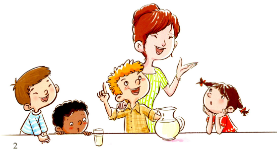
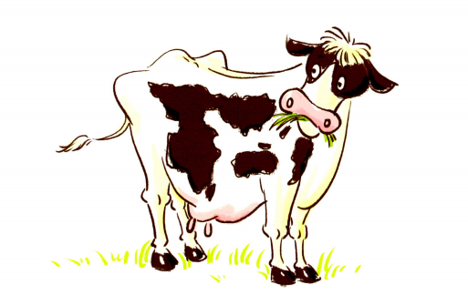

牛奶是从哪里来的？让我们一起探索牛奶的旅程吧！🐄

Billy比利（人名） is six years old. He visits his uncle叔叔 and aunt阿姨 / 姑姑 every summer夏天. They live on a farm农场.
They have cows奶牛, chickens鸡, sheep绵羊, and a big horse on the farm. Billy loves all the animals动物.
This summer, he is going to learn how to milk挤奶 a cow. Wow! His friends cannot believe it.
比利六岁了。他每年夏天都会去看望叔叔和阿姨。他们住在农场里。
农场里有奶牛、鸡、绵羊和一匹大马。比利喜欢所有的动物。
今年夏天，他要学习怎样给奶牛挤奶。哇！他的朋友们简直不敢相信。

"We get our milk from the store商店," they say. "But our friend is going to get it from a cow."
Billy laughs. "Milk does not come from the store," he says. "Milk comes from a cow."
His friends do not believe him. But his teacher says, "Yes, milk comes from cows. Cows eat grass. They change the grass into milk. The farmer农民 / 农场主 sells the milk. And we buy it in the stores."
The teacher tells them one more thing. "Did you know that cows have four stomachs胃（复数）?" The kids are surprised. But it's true!
他们说："我们的牛奶是从商店买来的。但我们的朋友竟然要从奶牛身上取牛奶。"
比利笑了。"牛奶不是来自商店，"他说，"牛奶来自奶牛。"
他的朋友们不相信他。但是他的老师说："是的，牛奶来自奶牛。奶牛吃草，它们把草变成牛奶。农民卖掉牛奶，我们再去商店购买。"
老师还告诉他们一件事："你们知道奶牛有四个胃吗？"孩子们都很惊讶。但这是真的！